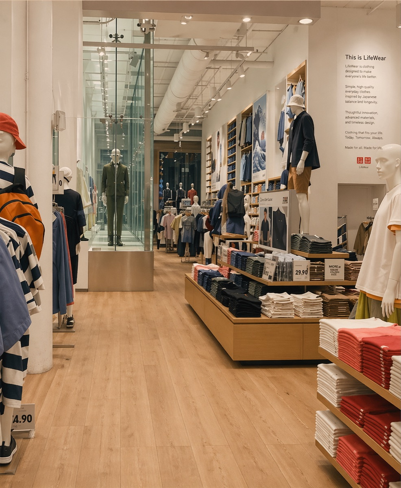

The brief § 01
My manager mentioned that UNIQLO houses all of its sales in one database — segmented only by day and by product, never by customer — and had a suspicion that it contained truths nobody had bothered to look for.
He wasn't technical, but he trusted the instinct: something is in there. He gave me room to experiment and shape a project around whatever I found. Eight weeks, Excel and R, and a brief I was allowed to write myself.
A critical tool he brought to his role here is a set of strong analytical skills. He has proved himself to be trustworthy and dependable, consistently delivering at high levels.
— Director of Brand Strategy, UNIQLO
Method § 02
First, a lot of cleaning. The sales system was manual and messy; before any analysis I had to wrestle it into something a correlation matrix could read. Excel for the wrangling, R for the statistics.
Then I drilled into SS 2021 — the season UNIQLO was promoting LifeWear: jackets and coats, jeans, sweaters, Airism, shirts and blouses, and t-shirts. Looking at the eight NY-metro stores, a pattern emerged: Saturdays and Sundays were peak sales days, with different products taking the top slot each day.
The high-volume items were consistent: Uniqlo U heavyweight tees, Supima tees, and Hoodies. When I ran correlations across products, one cluster lit up — the U tees, Supima tees, women's biker shorts, and men's boxers moved with 0.90+ correlation, even though boxers were a low-volume item.
Product-to-product correlation · SS 2021
Fig. 01Pairwise Pearson correlation to the U-tee time series across eight NY-metro stores, weekly sales, SS 2021. Four products form a single cluster at 0.90+ despite differing volumes. n = 26 weeks.
The store visit § 03
Data gets you a hypothesis; a floor gets you an explanation. On a 90°F August Saturday afternoon, I went to the SOHO store to see the correlation in the wild.
In one afternoon I watched roughly four hundred transactions — the same volume pattern the dataset had been showing me at the weekly level — unfold in real time. Biker shorts and tees were everywhere in the baskets, though rarely bought together in the same transaction. The correlation wasn't that customers were buying them as a set; it was that they were being bought by the same kind of person on the same kind of day.
I also noticed what was getting in the way: rain jackets and full-outfit mannequins occupying prime floor space, promoting LifeWear staples that had nothing to do with what was actually selling that afternoon.

The why § 04
Back at my desk, I chased the correlation across four directions.
- Social & adsUNIQLO's own channels weren't pushing these specific items. The demand was coming from somewhere else.
- WeatherThe biggest sales days followed weeks of 90°F+ highs. Heat was a reliable leading indicator.
- CultureThe tees had cultural salience I hadn't priced in — Tyler, the Creator tweeted about the Uniqlo tee; GQ wrote it up. On the women's side, Hailey Bieber and Lyn Slater were driving "off-duty biker short" looks, and #uniqlo and #bikershorts tags were thick with the product.
- PricingA competitive sweep showed our best-selling tees at roughly half the price of competitors — with review scores as good or better. That combination was winning on hot weekend days almost violently. The biker shorts didn't have the same price advantage, but quality plus cultural salience carried them.
Recommendation § 05
On peak summer weekends, merchandise the basket that is actually moving, not the one the seasonal campaign says should be moving. Put the U tee, the Supima tee, and the biker shorts in prime floor positions, in coordinated looks that reflected what customers were already building for themselves. Pull the rain-jacket mannequins out of the hottest real estate; they were paying rent and earning nothing.
Outcome § 06
The floor strategy shifted. Across August and September, the tee basket moved an estimated 40,000+ units across the eight NY-metro stores, with peak-weekend sell-through up on a matched pre-change baseline — and the correlated basket held its grouping well past the original study window.
What I'd change § 07
I'd vie harder, earlier, for customer-level data. The correlation was the ceiling of what product-only data could tell me — it could show me what moved together and hint at when, but it couldn't tell me who was walking in. A single customer identifier would have turned a strong hypothesis into a testable segment, and the floor-planning recommendation into a repeatable system.
Sales correlation
Manual POS cleaning in Excel · product-level correlation matrix in R on SS 2021 NY-metro sales · weekday / weekend decomposition · peak-day detection.
Store observation
One-afternoon SOHO field visit · ~400 transactions observed · photographs of displays and floor layout · notes on what was — and wasn't — being picked up.
Culture & pricing
Social-media scan (Tyler, the Creator; GQ; Hailey Bieber; Lyn Slater; #uniqlo #bikershorts) · competitive pricing and review-score sweep on comparable tees.